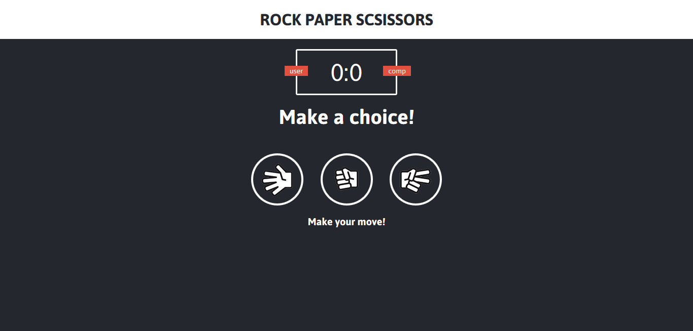

This is a
a game we all loved
The first known mention of the game was in the book Wuzazu [zh] by the Chinese Ming-dynasty writer Xie Zhaozhi [zh] (fl. c. 1600), who wrote that the game dated back to the time of the Chinese Han dynasty (206 BC – 220 AD).[7] In the book, the game was called shoushiling. Li Rihua's book Note of Liuyanzhai also mentions this game, calling it shoushiling (t. 手勢令; s. 手势令), huozhitou (t. 豁指頭; s. 豁指头), or huoquan (豁拳).

Overview
Prity simple little game I made. I focused on the game functionality rather then on the design. Everything is done in Javascript. Use win(); to cheat if you don't like losing.